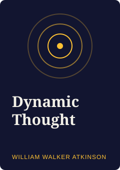
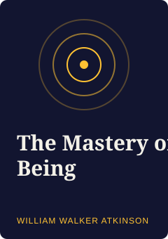
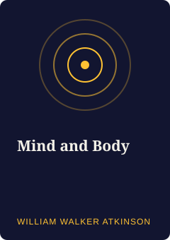
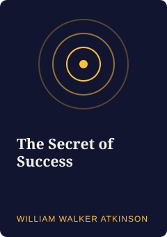
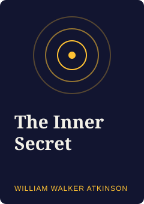
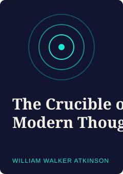
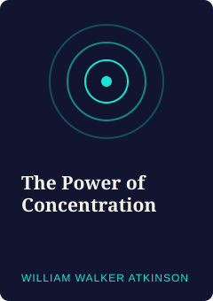
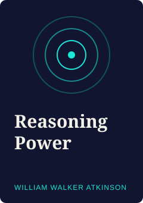

The books
69 works, 997 chapters, about 2.0 million words. A book can sit in more than one theme.
Thought and attractionThe core New Thought books: how thought shapes experience, how like attracts like, and how to use that.21 books

Dynamic Thought16 ch · 3.2 hr The Law of the New Thought16 ch · 2.7 hr
The Law of the New Thought16 ch · 2.7 hr
The Mastery of Being25 ch · 3.1 hr Mental Fascination21 ch · 3.9 hr
Mental Fascination21 ch · 3.9 hr
Mind and Body10 ch · 2.5 hr- Mind Power29 ch · 7.8 hr
 The New Psychology Its Message, Principles and Practice20 ch · 2.8 hr
The New Psychology Its Message, Principles and Practice20 ch · 2.8 hr- New Thought1 ch · 26 min
- Nuggets of the New Thought27 ch · 2.9 hr
 Practical Mental Influence12 ch · 85 min
Practical Mental Influence12 ch · 85 min The Secret of Mental Magic7 ch · 5.7 hr
The Secret of Mental Magic7 ch · 5.7 hr
The Secret of Success10 ch · 89 min- Self-Healing by Thought Force7 ch · 41 min
- Suggestion and Auto-Suggestion23 ch · 3.0 hr
 Thought-Culture14 ch · 2.4 hr
Thought-Culture14 ch · 2.4 hr Thought-Force in Business and Everyday Life16 ch · 2.3 hr
Thought-Force in Business and Everyday Life16 ch · 2.3 hr Thought Vibration16 ch · 1.6 hr
Thought Vibration16 ch · 1.6 hr- The Science of Psychic Healing21 ch · 2.5 hr
- Mental Therapeutics27 ch · 3.9 hr
- The Solar Plexus7 ch · 49 min

The Inner Secret9 ch · 2.5 hr
Training the mindMemory, concentration, reasoning, character and the layers of the mind, as practical courses.27 books
 The Art of Expression and the Principles of Discourse15 ch · 2.6 hr
The Art of Expression and the Principles of Discourse15 ch · 2.6 hr The Art of Logical Thinking19 ch · 2.5 hr
The Art of Logical Thinking19 ch · 2.5 hr
The Crucible of Modern Thought12 ch · 3.6 hr- How to Read Human Nature19 ch · 2.1 hr
 The Inner Consciousness10 ch · 85 min
The Inner Consciousness10 ch · 85 min- Memory Culture17 ch · 2.7 hr
- Memory20 ch · 2.6 hr
- Mind and Body10 ch · 2.5 hr
- The Psychology of Salesmanship10 ch · 3.2 hr
 The Subconscious and the Superconscious Planes of Mind13 ch · 2.5 hr
The Subconscious and the Superconscious Planes of Mind13 ch · 2.5 hr- Suggestion and Auto-Suggestion23 ch · 3.0 hr
- Your Mind and How to Use It31 ch · 3.3 hr
- The Art and Science of Personal Magnetism20 ch · 2.6 hr
- Master Mind17 ch · 5.5 hr

The Power of Concentration21 ch · 2.7 hr Personal Power9 ch · 2.4 hr
Personal Power9 ch · 2.4 hr- Creative Power9 ch · 2.6 hr
 Desire Power10 ch · 2.7 hr
Desire Power10 ch · 2.7 hr- Faith Power10 ch · 2.7 hr
- Will Power9 ch · 2.7 hr
 Subconscious Power8 ch · 2.6 hr
Subconscious Power8 ch · 2.6 hr Spiritual Power8 ch · 2.6 hr
Spiritual Power8 ch · 2.6 hr- Thought Power11 ch · 2.6 hr
 Perceptive Power9 ch · 2.6 hr
Perceptive Power9 ch · 2.6 hr
Reasoning Power10 ch · 2.7 hr- Character Power11 ch · 2.5 hr
 Regenerative Power10 ch · 2.6 hr
Regenerative Power10 ch · 2.6 hr
Yoga and the EastThe Yogi Ramacharaka lessons: breath, body, mind and wisdom, plus the Gita and the Upanishads.13 books
 Reincarnation and the Law of Karma12 ch · 3.1 hr
Reincarnation and the Law of Karma12 ch · 3.1 hr- The Hindu-Yogi Science of Breath16 ch · 1.6 hr
 Fourteen Lessons in Yogi Philosophy and Oriental Occultism15 ch · 5.3 hr
Fourteen Lessons in Yogi Philosophy and Oriental Occultism15 ch · 5.3 hr Advanced Course in Yogi Philosophy and Oriental Occultism12 ch · 6.8 hr
Advanced Course in Yogi Philosophy and Oriental Occultism12 ch · 6.8 hr Hatha Yoga32 ch · 4.6 hr
Hatha Yoga32 ch · 4.6 hr Raja Yoga12 ch · 5.4 hr
Raja Yoga12 ch · 5.4 hr- Gnani Yoga13 ch · 5.5 hr
 The Inner Teachings of the Philosophies and Religions of India12 ch · 6.6 hr
The Inner Teachings of the Philosophies and Religions of India12 ch · 6.6 hr Mystic Christianity12 ch · 4.9 hr
Mystic Christianity12 ch · 4.9 hr- The Life Beyond Death20 ch · 2.4 hr
 The Practical Water Cure10 ch · 1.6 hr
The Practical Water Cure10 ch · 1.6 hr The Spirit of the Upanishads14 ch · 83 min
The Spirit of the Upanishads14 ch · 83 min Bhagavad Gita20 ch · 2.3 hr
Bhagavad Gita20 ch · 2.3 hr
Healing and the bodySelf-healing, suggestion, mind and body, water, breath and the solar plexus.10 books
- Mind and Body10 ch · 2.5 hr
- Self-Healing by Thought Force7 ch · 41 min
- Suggestion and Auto-Suggestion23 ch · 3.0 hr
- The Hindu-Yogi Science of Breath16 ch · 1.6 hr
- Hatha Yoga32 ch · 4.6 hr
- The Science of Psychic Healing21 ch · 2.5 hr
- The Practical Water Cure10 ch · 1.6 hr
- Mental Therapeutics27 ch · 3.9 hr
- Vril12 ch · 1.6 hr
- The Solar Plexus7 ch · 49 min
Influence and magnetismPersonal magnetism, mental influence, reading people and selling.9 books
- How to Read Human Nature19 ch · 2.1 hr
- Mental Fascination21 ch · 3.9 hr
- Practical Mental Influence12 ch · 85 min
- The Psychology of Salesmanship10 ch · 3.2 hr
- Suggestion and Auto-Suggestion23 ch · 3.0 hr
- Thought-Force in Business and Everyday Life16 ch · 2.3 hr
- The Art and Science of Personal Magnetism20 ch · 2.6 hr
- Master Mind17 ch · 5.5 hr
- Vril12 ch · 1.6 hr
Grouped as the books are commonly catalogued. Some attributions are debated.
Yogi Ramacharaka11 books
- The Hindu-Yogi Science of Breath16 ch · 1.6 hr
- Fourteen Lessons in Yogi Philosophy and Oriental Occultism15 ch · 5.3 hr
- Advanced Course in Yogi Philosophy and Oriental Occultism12 ch · 6.8 hr
- Hatha Yoga32 ch · 4.6 hr
- The Science of Psychic Healing21 ch · 2.5 hr
- Raja Yoga12 ch · 5.4 hr
- Gnani Yoga13 ch · 5.5 hr
- The Inner Teachings of the Philosophies and Religions of India12 ch · 6.6 hr
- Mystic Christianity12 ch · 4.9 hr
- The Practical Water Cure10 ch · 1.6 hr
- Bhagavad Gita20 ch · 2.3 hr
Swami Panchadasi2 books
Theron Q. Dumont3 books
Magus Incognito1 books
His own name, or not reliably attributed52 books
- The Art of Expression and the Principles of Discourse15 ch · 2.6 hr
- The Art of Logical Thinking19 ch · 2.5 hr
- The Crucible of Modern Thought12 ch · 3.6 hr
- Dynamic Thought16 ch · 3.2 hr
- How to Read Human Nature19 ch · 2.1 hr
- The Inner Consciousness10 ch · 85 min
- The Law of the New Thought16 ch · 2.7 hr
- The Mastery of Being25 ch · 3.1 hr
- Memory Culture17 ch · 2.7 hr
- Memory20 ch · 2.6 hr
- Mental Fascination21 ch · 3.9 hr
- Mind and Body10 ch · 2.5 hr
- Mind Power29 ch · 7.8 hr
- The New Psychology Its Message, Principles and Practice20 ch · 2.8 hr
- New Thought1 ch · 26 min
- Nuggets of the New Thought27 ch · 2.9 hr
- Practical Mental Influence12 ch · 85 min
 Practical Mind-Reading8 ch · 85 min
Practical Mind-Reading8 ch · 85 min Practical Psychomancy and Crystal Gazing11 ch · 85 min
Practical Psychomancy and Crystal Gazing11 ch · 85 min- The Psychology of Salesmanship10 ch · 3.2 hr
- Reincarnation and the Law of Karma12 ch · 3.1 hr
- The Secret of Mental Magic7 ch · 5.7 hr
- The Secret of Success10 ch · 89 min
- Self-Healing by Thought Force7 ch · 41 min
- The Subconscious and the Superconscious Planes of Mind13 ch · 2.5 hr
- Suggestion and Auto-Suggestion23 ch · 3.0 hr
- Telepathy9 ch · 1.7 hr
- Thought-Culture14 ch · 2.4 hr
- Thought-Force in Business and Everyday Life16 ch · 2.3 hr
- Thought Vibration16 ch · 1.6 hr
- Your Mind and How to Use It31 ch · 3.3 hr
- The Life Beyond Death20 ch · 2.4 hr
- The Spirit of the Upanishads14 ch · 83 min
- Mental Therapeutics27 ch · 3.9 hr
 Genuine Mediumship11 ch · 5.1 hr
Genuine Mediumship11 ch · 5.1 hr- Personal Power9 ch · 2.4 hr
- Creative Power9 ch · 2.6 hr
- Desire Power10 ch · 2.7 hr
- Faith Power10 ch · 2.7 hr
- Will Power9 ch · 2.7 hr
- Subconscious Power8 ch · 2.6 hr
- Spiritual Power8 ch · 2.6 hr
- Thought Power11 ch · 2.6 hr
- Perceptive Power9 ch · 2.6 hr
- Reasoning Power10 ch · 2.7 hr
- Character Power11 ch · 2.5 hr
- Regenerative Power10 ch · 2.6 hr
 The Arcane Teachings21 ch · 4.5 hr
The Arcane Teachings21 ch · 4.5 hr The Arcane Formulas10 ch · 89 min
The Arcane Formulas10 ch · 89 min- Vril12 ch · 1.6 hr
- The Solar Plexus7 ch · 49 min
- The Inner Secret9 ch · 2.5 hr
All 69 books, A to Z
- Advanced Course in Yogi Philosophy and Oriental Occultism12 ch · 6.8 hr
- The Arcane Formulas10 ch · 89 min
- The Arcane Teachings21 ch · 4.5 hr
- The Art and Science of Personal Magnetism20 ch · 2.6 hr
- The Art of Expression and the Principles of Discourse15 ch · 2.6 hr
- The Art of Logical Thinking19 ch · 2.5 hr
- Bhagavad Gita20 ch · 2.3 hr
- Character Power11 ch · 2.5 hr
 Clairvoyance and Occult Powers20 ch · 5.6 hr
Clairvoyance and Occult Powers20 ch · 5.6 hr- Creative Power9 ch · 2.6 hr
- The Crucible of Modern Thought12 ch · 3.6 hr
- Desire Power10 ch · 2.7 hr
- Dynamic Thought16 ch · 3.2 hr
- Faith Power10 ch · 2.7 hr
- Fourteen Lessons in Yogi Philosophy and Oriental Occultism15 ch · 5.3 hr
- Genuine Mediumship11 ch · 5.1 hr
- Gnani Yoga13 ch · 5.5 hr
- Hatha Yoga32 ch · 4.6 hr
- The Hindu-Yogi Science of Breath16 ch · 1.6 hr
- How to Read Human Nature19 ch · 2.1 hr
 The Human Aura10 ch · 66 min
The Human Aura10 ch · 66 min- The Inner Consciousness10 ch · 85 min
- The Inner Secret9 ch · 2.5 hr
- The Inner Teachings of the Philosophies and Religions of India12 ch · 6.6 hr
- The Law of the New Thought16 ch · 2.7 hr
- The Life Beyond Death20 ch · 2.4 hr
- Master Mind17 ch · 5.5 hr
- The Mastery of Being25 ch · 3.1 hr
- Memory20 ch · 2.6 hr
- Memory Culture17 ch · 2.7 hr
- Mental Fascination21 ch · 3.9 hr
- Mental Therapeutics27 ch · 3.9 hr
- Mind and Body10 ch · 2.5 hr
- Mind Power29 ch · 7.8 hr
- Mystic Christianity12 ch · 4.9 hr
- The New Psychology Its Message, Principles and Practice20 ch · 2.8 hr
- New Thought1 ch · 26 min
- Nuggets of the New Thought27 ch · 2.9 hr
- Perceptive Power9 ch · 2.6 hr
- Personal Power9 ch · 2.4 hr
- The Power of Concentration21 ch · 2.7 hr
- Practical Mental Influence12 ch · 85 min
- Practical Mind-Reading8 ch · 85 min
- Practical Psychomancy and Crystal Gazing11 ch · 85 min
- The Practical Water Cure10 ch · 1.6 hr
- The Psychology of Salesmanship10 ch · 3.2 hr
- Raja Yoga12 ch · 5.4 hr
- Reasoning Power10 ch · 2.7 hr
- Regenerative Power10 ch · 2.6 hr
- Reincarnation and the Law of Karma12 ch · 3.1 hr
- The Science of Psychic Healing21 ch · 2.5 hr
 The Secret Doctrines of the Rosicrucians13 ch · 4.8 hr
The Secret Doctrines of the Rosicrucians13 ch · 4.8 hr- The Secret of Mental Magic7 ch · 5.7 hr
- The Secret of Success10 ch · 89 min
- Self-Healing by Thought Force7 ch · 41 min
- The Solar Plexus7 ch · 49 min
- The Spirit of the Upanishads14 ch · 83 min
- Spiritual Power8 ch · 2.6 hr
- The Subconscious and the Superconscious Planes of Mind13 ch · 2.5 hr
- Subconscious Power8 ch · 2.6 hr
- Suggestion and Auto-Suggestion23 ch · 3.0 hr
- Telepathy9 ch · 1.7 hr
- Thought Power11 ch · 2.6 hr
- Thought Vibration16 ch · 1.6 hr
- Thought-Culture14 ch · 2.4 hr
- Thought-Force in Business and Everyday Life16 ch · 2.3 hr
- Vril12 ch · 1.6 hr
- Will Power9 ch · 2.7 hr
- Your Mind and How to Use It31 ch · 3.3 hr